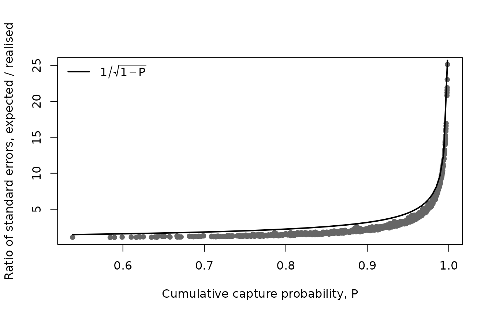
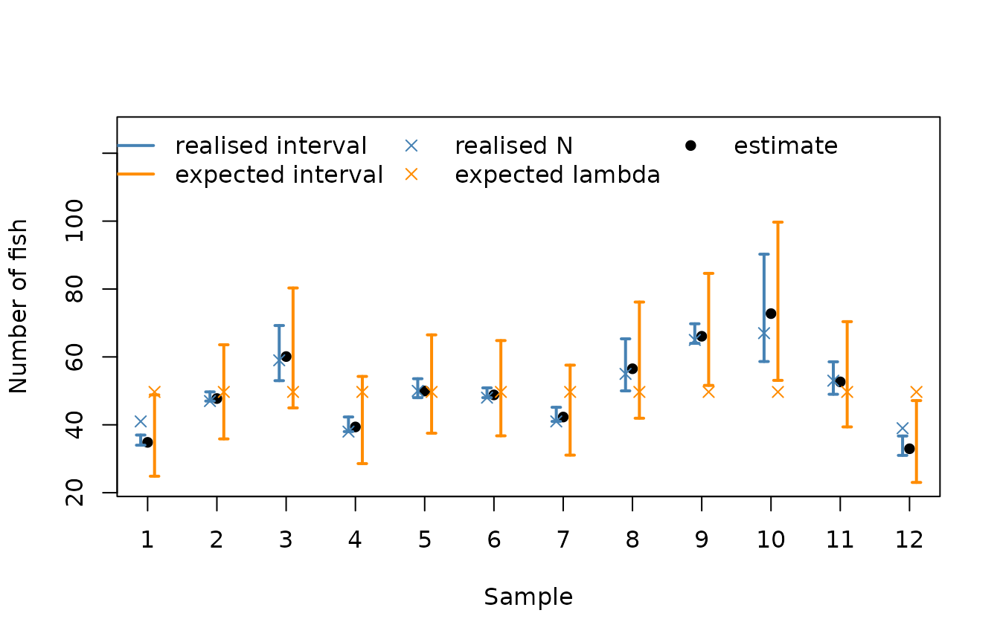
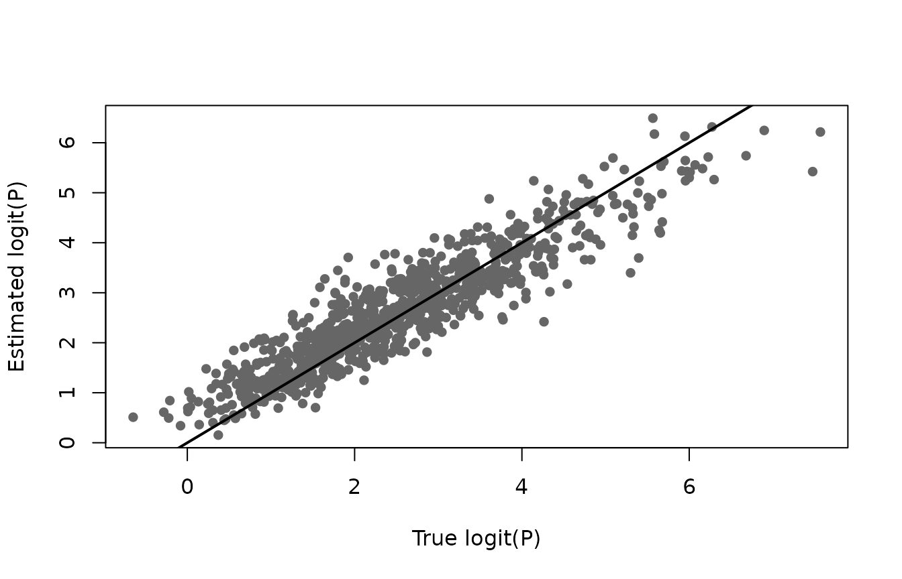
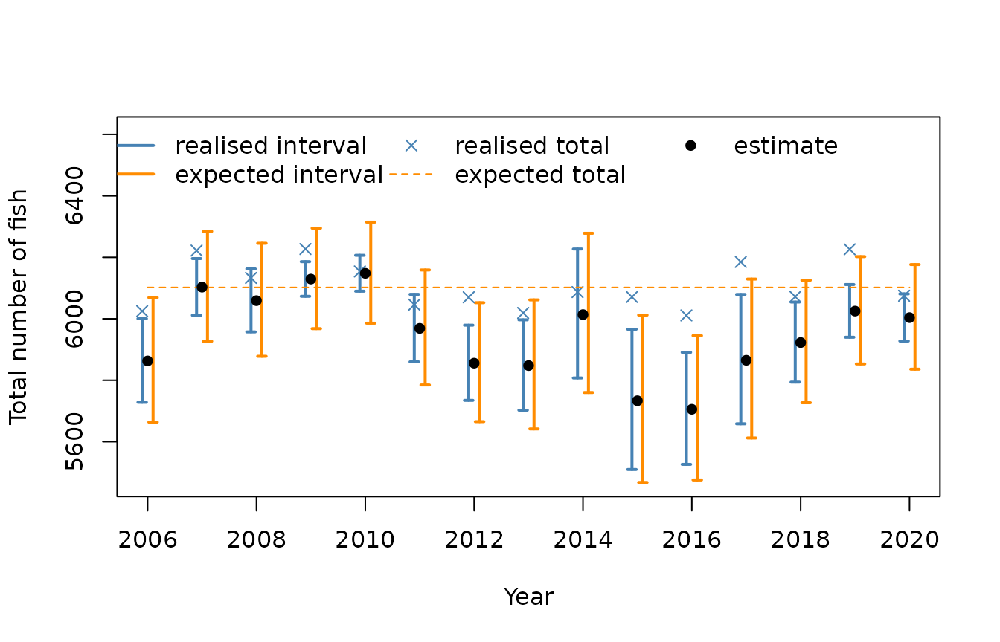

Realised and expected abundance
Source:vignettes/articles/realised-expected.Rmd
realised-expected.RmdOnce capture probability has been estimated, the abundance of fish in a sample is estimated by dividing the catch by the cumulative capture probability. There are two different quantities that this estimate can be used for, and they need different confidence intervals:
- the realised abundance N: the number of fish that were in the area fished when the sample was taken. This answers “how many fish were there?”
- the expected abundance \lambda: the mean of the process that produced N, for example density times area. This answers “how many fish do we expect at this site?”, which is what matters when comparing sites, years or habitats.
abundance() gives both, using the target
argument. This article explains the difference, and uses simulated data
to see how well each confidence interval covers its own target. It also
shows a limitation: estimated capture probabilities are shrunk towards
the average, which biases estimates of abundance downwards, so the
confidence intervals cover the truth less often than they should.
The theory
For a sample with n passes and capture probability p_i on pass i, the cumulative capture probability is P = 1 - \prod_i (1 - p_i), and each fish present is caught on one of the passes with probability P. The total catch T is therefore:
- binomial given the realised abundance: T \mid N \sim \textrm{Bin}(N, P)
- Poisson given the expected abundance, if the number of fish present is Poisson, N \sim \textrm{Poisson}(\lambda): then T \sim \textrm{Poisson}(\lambda P), because catching each fish independently with probability P “thins” a Poisson count into another Poisson count.
In both cases the estimate is the same, \hat N = \hat\lambda = T / P, but the variance is not:
| target | variance of T / P given P | lower confidence limit |
|---|---|---|
| realised, N | N (1 - P) / P | at least the catch T |
| expected, \lambda | \lambda / P | can be less than T |
The expected abundance has the larger variance, by a factor of 1 / (1 - P), because it also includes the natural variation of N about \lambda. When P is high this factor is large: for P = 0.9 the variance is ten times larger. This makes sense: if almost every fish is caught, we know almost exactly how many were present, but one sample still says little about how many we would expect on average.
The uncertainty in P adds a second
term, which is the same for both targets, N^2
(1 - P)^2 \textrm{var}(\textrm{logit}(P)). It is computed from
the model, and is correlated between samples because they depend on the
same model coefficients, which abundance() allows for when
it sums abundance over groups of samples.
The data
The data are simulated, as described in Simulating electrofishing data. There are 30 sites, each visited once a year for 15 years, with a sample of fry and a sample of parr on each visit. The number of fish in each sample was simulated as N \sim \textrm{Poisson}(\lambda), where \lambda is density times area times a site effect, so both targets are known.
Code to simulate the data
set.seed(2024)
nsite <- 30
years <- 2006:2020
# one visit to each site in each year
visits <- expand.grid(siteID = paste0("Site", 1:nsite), year = years)
visits$siteID <- factor(visits$siteID, levels = paste0("Site", 1:nsite))
nvisit <- nrow(visits)
visits$visitID <- factor(paste(visits$siteID, visits$year))
# sites are fished between June and October
visits$doy <- sample(152:304, nvisit, replace = TRUE)
# the area fished (m^2) is a property of the site
visits$area <- round(runif(nsite, 80, 250))[visits$siteID]
# smooth effects on logit capture probability
f_year <- function(year) 0.5 * sin(2 * pi * (year - 2006) / 12)
f_doy <- function(doy) 0.9 * exp(-((doy - 200) / 35)^2) - 0.45
# two samples per visit: fry and parr
samples <- merge(visits, data.frame(lifestage = c("Fry", "Parr")))
samples <- samples[order(samples$visitID, samples$lifestage), ]
samples$lifestage <- factor(samples$lifestage)
samples$sampleID <- factor(paste(samples$visitID, samples$lifestage))
nsample <- nrow(samples)
# random effects on logit capture probability
sigma_visit <- 0.4
sigma_sample <- 0.3
visit_effect <- rnorm(nvisit, 0, sigma_visit)
names(visit_effect) <- levels(visits$visitID)
samples$visit_effect <- visit_effect[as.character(samples$visitID)]
samples$sample_effect <- rnorm(nsample, 0, sigma_sample)
# the number of fish in the area fished
density <- c(Fry = 0.8, Parr = 0.4) # fish per m^2
site_effect <- rnorm(nsite, 0, 0.5)
samples$N <-
rpois(
nsample,
density[as.character(samples$lifestage)] * samples$area *
exp(site_effect[samples$siteID])
)
# three passes per sample
ef_sim <- merge(samples, data.frame(pass = 1:3))
ef_sim <- ef_sim[order(ef_sim$sampleID, ef_sim$pass), ]
rownames(ef_sim) <- NULL
# capture probability is lower after the first pass, and higher for parr
ef_sim$pass12 <- factor(pmin(ef_sim$pass, 2))
ef_sim$eta <-
0.3 +
0.5 * (ef_sim$lifestage == "Parr") -
0.4 * (ef_sim$pass12 == "2") +
f_year(ef_sim$year) +
f_doy(ef_sim$doy) +
ef_sim$visit_effect +
ef_sim$sample_effect
ef_sim$p <- 1 / (1 + exp(-ef_sim$eta))
# remove fish pass by pass
ef_sim$count <- NA
remaining <- samples$N
names(remaining) <- samples$sampleID
for (i in 1:3) {
ipass <- which(ef_sim$pass == i)
id <- as.character(ef_sim$sampleID[ipass])
ef_sim$count[ipass] <- rbinom(length(ipass), remaining[id], ef_sim$p[ipass])
remaining[id] <- remaining[id] - ef_sim$count[ipass]
}
# the expected number of fish in each sample
samples$lambda <- density[as.character(samples$lifestage)] * samples$area *
exp(site_effect[samples$siteID])
head(samples[c("sampleID", "lifestage", "area", "lambda", "N")])
#> sampleID lifestage area lambda N
#> 1 Site1 2006 Fry Fry 156 99.37170 105
#> 451 Site1 2006 Parr Parr 156 49.68585 41
#> 31 Site1 2007 Fry Fry 156 99.37170 100
#> 481 Site1 2007 Parr Parr 156 49.68585 47
#> 61 Site1 2008 Fry Fry 156 99.37170 88
#> 511 Site1 2008 Parr Parr 156 49.68585 59Fitting the model
The model has fixed effects for lifestage and pass, smooth effects of year and day of the year, and visit and sample random effects, see Visit and sample random effects.
Abundance of each sample
The two targets give the same estimates, but different standard errors and confidence intervals:
realised <- abundance(m)
expected <- abundance(m, target = "expected")
truth <- samples[match(realised$id, samples$sampleID), ]
head(cbind(realised[c("id", "catch", "P", "N")],
se_realised = realised$se, se_expected = expected$se))
#> id catch P N se_realised se_expected
#> 1 Site1 2006 Fry 90 0.9184740 97.98862 4.5188500 10.881573
#> 2 Site1 2006 Parr 34 0.9760066 34.83583 1.0664218 5.997757
#> 3 Site1 2007 Fry 97 0.9449884 102.64676 3.4644059 10.707421
#> 4 Site1 2007 Parr 47 0.9844732 47.74127 0.9818676 6.978920
#> 5 Site1 2008 Fry 65 0.7645178 85.02091 9.6513864 13.348040
#> 6 Site1 2008 Parr 53 0.8818100 60.10365 4.3422546 8.885878The ratio of the standard errors depends on P. When P is well estimated it is close to 1 / \sqrt{1 - P}; the uncertainty in P makes it smaller, as it adds the same amount to both variances:
plot(realised$P, expected$se / realised$se, pch = 16, col = "grey40",
xlab = "Cumulative capture probability, P",
ylab = "Ratio of standard errors, expected / realised")
curve(1 / sqrt(1 - x), add = TRUE, lwd = 2)
legend("topleft", legend = expression(1 / sqrt(1 - P)), lwd = 2, bty = "n")
Coverage
The proportion of the 95% confidence intervals that contain each target shows which interval answers which question:
covers <- function(ci, x) mean(ci$lower <= x & x <= ci$upper, na.rm = TRUE)
data.frame(
interval = c("realised", "expected"),
covers_N = c(covers(realised, truth$N), covers(expected, truth$N)),
covers_lambda = c(covers(realised, truth$lambda), covers(expected, truth$lambda))
)
#> interval covers_N covers_lambda
#> 1 realised 0.8900000 0.5144444
#> 2 expected 0.9888889 0.9366667The realised intervals are far too narrow for the expected abundance, and the expected intervals are wider than they need to be for the realised abundance, so each interval should only be used for its own target. But neither reaches 95% for its own target: the realised intervals contain the realised abundance 89% of the time, and the expected intervals contain the expected abundance 94% of the time. The next section shows why.
The intervals for some parr samples show the difference. The realised intervals are narrow, and never go below the catch; the expected intervals are wider and are centred on the same estimate:
show <- which(truth$lifestage == "Parr")[1:12]
x <- seq_along(show)
ylim <- range(expected$lower[show], expected$upper[show], truth$N[show], truth$lambda[show])
ylim[2] <- ylim[2] + 0.35 * diff(ylim) # room for the legend
plot(x, realised$N[show], ylim = ylim,
pch = 16, xaxt = "n", xlab = "Sample", ylab = "Number of fish")
arrows(x - 0.1, realised$lower[show], x - 0.1, realised$upper[show],
angle = 90, code = 3, length = 0.03, lwd = 2, col = "steelblue")
arrows(x + 0.1, expected$lower[show], x + 0.1, expected$upper[show],
angle = 90, code = 3, length = 0.03, lwd = 2, col = "darkorange")
points(x - 0.1, truth$N[show], pch = 4, col = "steelblue")
points(x + 0.1, truth$lambda[show], pch = 4, col = "darkorange")
axis(1, at = x)
legend("top", bty = "n", ncol = 3, lwd = c(2, 2, NA, NA, NA), pch = c(NA, NA, 4, 4, 16),
col = c("steelblue", "darkorange", "steelblue", "darkorange", "black"),
legend = c("realised interval", "expected interval", "realised N",
"expected lambda", "estimate"))
Bias in the estimated capture probability
The simulated capture probabilities are known, so the estimates of P can be compared with the truth:
true_P <- tapply(ef_sim$p, ef_sim$sampleID, function(p) 1 - prod(1 - p))
cp <- capture_prob(m, se.fit = TRUE)
cp$true_P <- true_P[as.character(cp$id)]
c(mean_error_logit_P = mean(qlogis(cp$P) - qlogis(cp$true_P)),
coverage_P = mean(cp$lower <= cp$true_P & cp$true_P <= cp$upper),
total_N_ratio = sum(realised$N) / sum(truth$N))
#> mean_error_logit_P coverage_P total_N_ratio
#> 0.1083081 0.9277778 0.9740291
plot(qlogis(cp$true_P), qlogis(cp$P), pch = 16, col = "grey40",
xlab = "True logit(P)", ylab = "Estimated logit(P)")
abline(0, 1, lwd = 2)
The estimated capture probabilities are shrunk towards the average: those of samples with a low capture probability are overestimated, and those with a high capture probability are underestimated. This is clear when the samples are grouped by their true capture probability:
group <- cut(cp$true_P, quantile(cp$true_P, 0:4 / 4), include.lowest = TRUE,
labels = c("lowest", "second", "third", "highest"))
N_hat <- realised$N
data.frame(
true_P = tapply(cp$true_P, group, function(x) paste(round(range(x), 2), collapse = " to ")),
error_logit_P = round(tapply(qlogis(cp$P) - qlogis(cp$true_P), group, mean), 2),
estimated_over_true_N = round(tapply(N_hat, group, sum) / tapply(truth$N, group, sum), 3)
)
#> true_P error_logit_P estimated_over_true_N
#> lowest 0.34 to 0.83 0.37 0.927
#> second 0.83 to 0.91 0.24 0.981
#> third 0.91 to 0.96 0.08 1.001
#> highest 0.96 to 1 -0.25 1.004Shrinkage is a property of random effects: the estimate of a visit or sample effect is pulled towards zero, more strongly the less information the sample has about it. On its own it would not bias the total, as the errors go both ways. But abundance is the catch divided by P, and 1 / P is convex: overestimating a low P reduces the estimated abundance by much more than underestimating a high P increases it. Low capture probability samples therefore dominate, and the total estimated abundance is 2.6% less than the true total. With the true capture probabilities the total would be unbiased.
Leaving the random effects out does not help: the variation between visits and samples is then not estimated at all, so every sample is shrunk all the way to the average, the total is biased by a similar amount, and the confidence intervals are far too narrow.
The confidence intervals allow for the uncertainty in the random effects on average, so the intervals for P contain the true value 93% of the time. But they do not allow for the bias of individual samples, which is largest for samples with a low capture probability. The realised intervals for abundance are affected most, because they are narrow when P is high, so a small error in P moves the estimate by more than the width of the interval.
In practice:
- the bias is largest for samples with a low capture probability, and for totals over many samples, where it accumulates while the relative standard error gets smaller;
- the expected intervals are less affected, as they are wider;
- anything that gives more information about the capture probability of each sample, such as more passes, or covariates that explain the variation between visits, reduces the shrinkage and the bias.
Totals over groups of samples
Abundance can be summed over groups of samples using by,
for example over all sites and lifestages in each year:
year_realised <- abundance(m, by = "year")
year_expected <- abundance(m, by = "year", target = "expected")
year_truth <- data.frame(
year = years,
N = tapply(samples$N, samples$year, sum),
lambda = tapply(samples$lambda, samples$year, sum)
)
head(cbind(year_realised[c("year", "catch", "N", "se")],
se_expected = year_expected$se, true_N = year_truth$N,
true_lambda = year_truth$lambda))
#> year catch N se se_expected true_N true_lambda
#> 1 2006 5164 5862.818 69.46559 103.38417 6025 6102.067
#> 2 2007 5610 6103.027 47.08371 91.21350 6222 6102.067
#> 3 2008 5528 6059.043 52.30339 93.78000 6133 6102.067
#> 4 2009 5859 6129.267 28.75145 83.40212 6227 6102.067
#> 5 2010 5869 6147.932 29.80441 83.88226 6154 6102.067
#> 6 2011 5381 5968.819 56.02403 95.43328 6046 6102.067The site effects are the same in each year, so the expected total is the same every year, while the realised total varies about it. The bias in P accumulates over the samples in each year, so the estimated totals are consistently below the truth, and many of the realised intervals, which are narrow relative to the bias, miss the true totals:
yr <- year_realised$year
ylim <- range(year_expected$lower, year_expected$upper, year_truth$N)
ylim[2] <- ylim[2] + 0.35 * diff(ylim) # room for the legend
plot(yr, year_realised$N, type = "n", ylim = ylim,
xlab = "Year", ylab = "Total number of fish")
arrows(yr - 0.1, year_realised$lower, yr - 0.1, year_realised$upper,
angle = 90, code = 3, length = 0.03, lwd = 2, col = "steelblue")
arrows(yr + 0.1, year_expected$lower, yr + 0.1, year_expected$upper,
angle = 90, code = 3, length = 0.03, lwd = 2, col = "darkorange")
points(yr - 0.1, year_truth$N, pch = 4, col = "steelblue")
lines(yr, year_truth$lambda, col = "darkorange", lty = 2)
points(yr, year_realised$N, pch = 16)
legend("top", bty = "n", ncol = 3, lwd = c(2, 2, NA, 1, NA), pch = c(NA, NA, 4, NA, 16),
lty = c(1, 1, NA, 2, NA),
col = c("steelblue", "darkorange", "steelblue", "darkorange", "black"),
legend = c("realised interval", "expected interval", "realised total",
"expected total", "estimate"))
Which to use
- Use
target = "realised", the default, to report how many fish were present when the samples were taken, for example the number of parr in a stretch of river in a given year. - Use
target = "expected"to describe the underlying abundance, for example to compare sites or years, or to look for a trend, where the natural year to year variation in the number of fish is part of the uncertainty.
Modelling the counts directly, for example with a Poisson model for
the total catch with offset \log(A P),
where A is the area fished, is a model
for the expected abundance, as it assumes T
\sim \textrm{Poisson}(\lambda P). Such a model treats P as known; abundance() with
target = "expected" includes the uncertainty in P.
When the catch is zero the estimated abundance is zero, and the
confidence limits are NA for both targets.
Whichever target is used, the confidence intervals do not allow for the bias caused by the shrinkage of the estimated capture probabilities, described above, so they should be treated as approximate, particularly for totals over many samples.